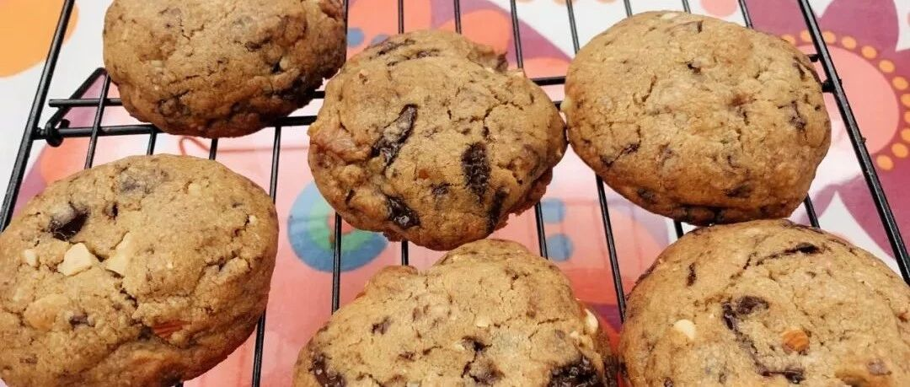

跟着书本学烘焙之九 - 巧克力奇普饼干（传统版）
今天是除夕，也是立春，祝大家新年快乐，身体健康，事事顺心，吉祥如意！
好久没有做“跟着书本学烘焙”系列了，继续哈继续。
德州农民是我很喜欢的一个博主，她的很多面包的方子都是自发酵母，很有食欲，但是我总是觉得麻烦，从来没有尝试过。这个奇普饼干的方子，我很早很早在微博上关注她的时候，就非常喜欢，每年冬天一到，就特别想做这个饼干，虽然略有麻烦，但是真的吃起来非常满足。
这个方子是传统版的巧克力奇普饼干，现在也有快手版的（下厨房里面的方子多数是快手版的，君之的方子也是），以后有机会给大家分享。但是，恕我直言，我还是最喜欢这一版，风味真的不一样。
材料：（重点：不要减糖，不要减大小）
中粉 248g（超市普通面粉）
小苏打 2g（建议还是放）
黄油 200g
糖 100g
褐色糖 148g （用太古的brown sugar <见图>）
盐 4g
香草香精，2小勺 （我没放，也没什么）
蛋 1个
蛋黄 1个
苦甜巧克力，225克，切小块 （77%以上可可含量，豆不如切块的效果好）
核桃，100克，切碎（要比较碎）也可以加杏仁，腰果，这些没有味道的坚果。
步骤：
先用145g黄油，做成褐色黄油，我把步骤放在这个推送的第二条，单独做出来，方便大家查阅。网上没有很详细的做褐色黄油的做法，我就做了一个详细教程，希望大家可以有更明确的了解，增加成功率。
褐色黄油做好了以后，趁热加入55g剩余的黄油，记得要切成小块，融化的快一些。

加入褐色糖，白砂糖，盐，香草（如有），用打蛋器搅拌均匀。你会发现黄油和糖是不能融合在一起的，在糖的表面浮着一层黄油，没有关系。

加入全蛋和蛋黄，搅拌器一定要快速搅拌，建议用2挡，30秒，防止蛋被烫熟。然后静止3分钟。然后继续2挡搅拌30秒，再静止3分钟。第三次1挡搅拌30秒，静止3分钟，第四次1挡搅拌30秒，静止3分钟。

这时候，黄油和糖已经可以非常好的融合了，很赞。

筛入中粉和小苏打。切拌到看不到干粉即可。
加入巧克力小块和坚果碎。核桃当然是最搭的，我因为忘记买核桃，只能从每日坚果拆出来用了。。。有一点蔓越莓味道貌似也不错。不要太纠结。

切拌均匀后，形成面团，这时候基本上248g中粉就够了，如果觉得非常粘手，面团会黏在手上，就再加上30g中粉。不需要再多了。
最好可以冷藏过夜，风味更好。如果实在忍不住，可以冷藏一小时，就先烤4块，解解馋。真诚推荐还是要冷藏过夜！
分成60g大小的小团子，稍微压一下，不需要压平，摆在烤盘里，中间预留起码5cm的空间，黄金烤盘放四个最多了，莫贪心，不然给你摊张饼。。。（不要减大小，谨记！谨记！）

190度，15分钟，周围上色了就可以拿出来。不要觉得中间软，不敢拿出来，移来移去的时候要小心，因为中间很软。拿出来以后，放在烤架上晾凉，会慢慢中间变成韧性的，周围脆脆的，好吃到哭。
配红茶，咖啡都很好吃的。如果喜欢巧克力爆浆的感觉，微波炉加热15秒，也很好吃哒。


跟着书本学烘焙系列：
长按二维码，关注水星婆婆